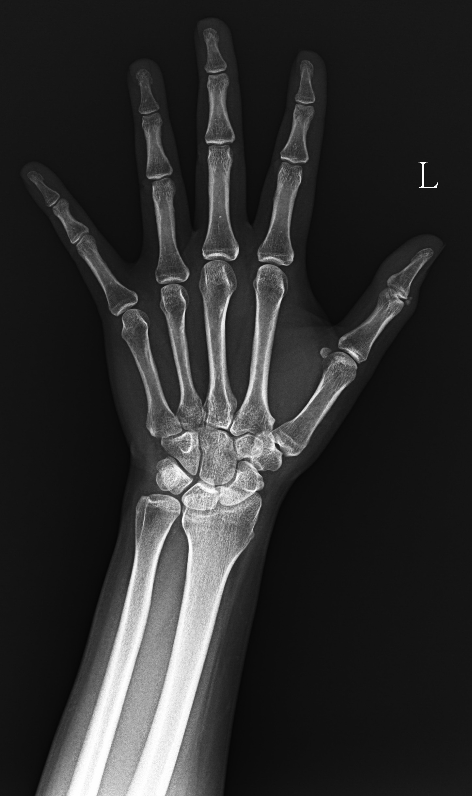

骨科衛教
拇指突然痛到不能轉瓶蓋：
不是每一種都是媽媽手
沒有扭到、沒有摔到，拇指卻在兩天之內痛到握不住東西。這種痛得毫無道理的手，X 光常常會給你答案。
48 歲女性，家管，平常最常做的動作之一就是轉開瓶蓋和罐頭。
兩天前左手拇指開始痛，愈來愈厲害，痛到連毛巾都擰不了，因此來門診。
沒有跌倒，沒有扭到，什麼事都沒發生。
這樣的病人走進來，多數人第一個想到的是媽媽手——年齡對、性別對、反覆用力轉握的動作也對。這個判斷完全合理，而且大部分時候會是對的。
但有一個細節不太對勁：媽媽手很少在兩天內痛成這樣。 它通常是幾週到幾個月慢慢累積出來的。
「這個痛是慢慢來的，還是突然發生的？」
這一題的答案，往往比任何檢查都更早把方向指出來。
什麼是急性鈣化性肌腱炎
肌腱本來是柔韌的纖維組織，不該有鈣。 但在某些情況下，肌腱局部會堆積鈣質（主要成分是羥基磷灰石），質地從牙膏狀到粉筆狀都有。
它最有名的舞台是肩膀——旋轉肌袖的鈣化性肌腱炎相當常見。 但它也會發生在手腕與手部，包括拇指周圍的肌腱。 位置比較少見，機轉是一樣的。
這跟你吃了多少鈣、有沒有補鈣完全無關。 它是肌腱局部的代謝變化，不是全身鈣質過多堆出來的。 不必為了它把鈣片或牛奶停掉。
為什麼最痛的時候反而是好消息
這是我最希望你記住的一段。鈣化性肌腱炎會走完幾個階段：
| 階段 | 身體在做什麼 | 你的感覺 |
|---|---|---|
| 形成期 | 鈣質慢慢沉積 | 常常沒感覺，或只是悶悶的 |
| 靜止期 | 鈣化穩定存在 | 可能完全沒症狀 |
| 吸收期 | 身體開始清除鈣質 | 劇痛，最難熬的階段 |
| 修復期 | 肌腱重新長回正常組織 | 疼痛逐漸緩解 |
階段長短因人而異，也不是每個人都會經歷明顯的急性期。
關鍵在於：讓你痛到擰不了毛巾的那股急性發炎，正是身體在把鈣質溶掉、搬走的過程。 清除時會釋放大量發炎物質，所以特別痛。
痛的強度和鈣化的大小經常不成正比。 影像上一小點卻痛得要命的人很多，一大塊卻多年無感的也不少。 看到報告上的尺寸，不必自己嚇自己。
拇指痛的四種常見來源
同樣是拇指這一帶在痛，來源差很多，處理方式也不同。
| 狀況 | 怎麼開始 | 痛在哪 | 典型特徵 |
|---|---|---|---|
| 急性鈣化性肌腱炎 | 突然，一兩天到高峰 | 局部一點，可能紅腫發熱 | X 光看得到鈣化 |
| 媽媽手 | 慢慢來，數週到數月 | 手腕拇指側 | 拇指握拳往小指偏會劇痛 |
| 板機指 | 逐漸出現 | 拇指根部掌側 | 彎曲時卡住、彈跳，摸得到硬結 |
| 拇指腕掌關節炎 | 長期、逐年加重 | 拇指根部與手腕交界 | 捏握、轉瓶蓋時痛，久了關節變形 |
這只是初步參考，實際診斷仍需理學檢查與影像佐證。
幾週幾個月慢慢痛起來 → 想媽媽手、板機指、關節炎。
一兩天內突然痛到極點 → 要想鈣化性肌腱炎，也要排除感染與痛風。
診間裡我會做什麼
先照 X 光
這是最關鍵、也最容易被跳過的一步。 媽媽手不需要 X 光就能診斷，所以很多突然發作的手痛從來沒被照過片子。 但鈣化在 X 光上一目瞭然，一張片子就能把方向完全扭轉。
同時也能排除骨折、看看關節有沒有退化。


再用超音波看細節
X 光告訴我「有沒有」，超音波告訴我「是什麼樣的、周圍怎麼了」。 可以看到鈣化的質地、肌腱鞘有沒有積水、周圍軟組織的發炎程度，必要時還能在導引下直接處理。
處理的順序
| 方式 | 什麼時候用 |
|---|---|
| 止痛消炎 | 急性期第一線，先把痛壓下來 |
| 副木或護具 | 讓拇指休息，避免反覆刺激 |
| 影像導引注射 | 發炎劇烈、痛到無法生活或睡眠時 |
| 體外震波 | 痛拖得比較久、或反覆發作時 |
| 調整用手方式 | 疼痛緩解後，減少復發 |
你可能查過鈣化性肌腱炎，看到「用針把鈣抽出來沖掉」這種做法（抽吸沖洗）。 那是肩膀的處理方式。 手指與拇指的肌腱又細又淺，旁邊就是神經、血管和腱鞘，手部的鈣化不做抽吸沖洗。
好消息是：手部的急性鈣化多半會自己過去，靠藥物、休息和時間就能解決，不需要走到那一步。
急性期的目標不是把鈣化清光，而是把痛壓到你能正常過日子。 鈣化多半會被身體慢慢處理掉，那需要時間。 多數人不需要開刀。
回到那個瓶蓋
痛緩解之後，真正該處理的是每天重複幾十次的那個動作。 轉瓶蓋、擰毛巾、開罐頭——這些都是拇指最吃力的姿勢。
- 用工具代替手指：開瓶器、防滑墊，一個銅板的東西就能省下大量負荷。
- 改用整隻手掌施力，不要只靠拇指和食指去捏。
- 分段休息：連續做家事時，中間讓手完全放鬆一下。
這些狀況請盡快就醫
手指突然劇痛又紅腫時，以下狀況不要自己觀察：
- 紅、腫、發熱合併發燒——必須排除感染，這是會壞事的一種。
- 關節劇痛、皮膚發亮，尤其半夜發作——要考慮痛風。
- 有傷口、被刺到或咬到之後才痛——感染風險高，要盡快處理。
- 手指麻、無力或發白冰冷——神經或血液循環的問題。
- 痛持續加重、止痛藥完全壓不住。
急性鈣化性肌腱炎發作時可能又紅又腫又熱，外觀跟感染、痛風非常像。 這三者的處理方式完全不同，不要自己判斷，也不要先自行熱敷或推拿。
三個常見誤解
「手痛就是媽媽手」
媽媽手確實常見，但它的痛是慢慢累積的。 突然在一兩天內痛到極點，就要想別的可能。 差別不只是病名，而是要不要照 X 光、要不要排除感染。
「有鈣化就要開刀清掉」
不用。大多數的鈣化會被身體自己吸收掉，真正需要手術的是少數保守治療都無效的人。
「越痛代表越嚴重」
恰恰相反。劇痛常出現在吸收期，也就是身體正在清除鈣質的時候。 這個階段雖然難熬，但它代表病程正在往結束的方向走。
突然痛起來的手，值得照一張 X 光。 慢慢痛的多半是勞損，突然痛的要先把鈣化、痛風、感染分清楚—— 這三種的處理方式完全不一樣。
本文為一般衛教資訊，不能取代醫師的診察、診斷或治療。 文中案例已隱去可辨識資訊，分辨方式僅供初步參考，實際診斷需要理學檢查與影像佐證。 每個人的狀況都不同，請與您的主治醫師討論後再決定治療方式。